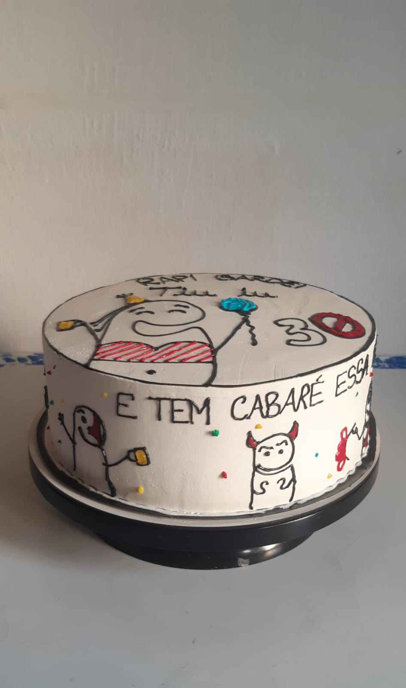

Campanhas Publicitárias Doce Lírio
O bolo de chocolate com morango é a combinação perfeita do sabor doce com o azedinho da fruta. Com várias opções de preparo, essa é uma sobremesa certeira para servir em datas especiais, como em festas, jantares, reuniões com os amigos ou com a família. É difícil encontrar alguém que não se apaixone por esse festival de sabores.

O bolo de chocolate com morango é a combinação perfeita do sabor doce com o azedinho da fruta. Com várias opções de preparo, essa é uma sobremesa certeira para servir em datas especiais, como em festas, jantares, reuniões com os amigos ou com a família. É difícil encontrar alguém que não se apaixone por esse festival de sabores.
Quem não adora chegar em uma festa e se deparar com lindos bolos decorados, não é mesmo? Seja um bolo decorado com chantilly, ou mesmo com pasta americana, os bolos decorados são sobremesas que vão além de agradar o nosso paladar, pois também são feitos para agradar os nossos olhos.

Fabulosa guloseima, feita de leite condensado, manteiga, açúcar e chocolate em pó, inicialmente feita como uma forma de arrecadar fundos para a campanha, rapidamente ganhou popularidade e se espalhou pelo resto do país junto da campanha do Brigadeiro.
Telefone: (85) 9.9869-7236